<style> .reveal section img { background:none; border:none; box-shadow:none; } #left { margin: 10px 0 15px 20px; text-align: center; float: left; z-index:-10; width:48%; font-size: 0.85em; line-height: 1.5; } #right { margin: 10px 0 15px 0; float: right; text-align: center; z-index:-10; width:48%; font-size: 0.85em; line-height: 1.5; } </style> # Unidad 8: Automatización <span style="font-size: 20.0pt; "> **Profesor:** Ing. Israel Chaves Arbaiza </span> <span style="font-size: 20.0pt;"> **Curso**: Electrónica Básica para Ing. Mecánica </span> [//]: # () [//]: # () [//]: # (<img align="right" width="350" height="100" src="media/logoEIM.png">) <img width="900" height="130" src="media/logo_slides.jpg"> --- ## Agenda <span style="font-size: 22.0pt; "> * Historia * ¿Qué es un PLC? * Funcionamiento de un PLC * Características * Ventajas y desventajas * Estructura básica * Diagrama Escalera </span> --- ### Historia <span style="font-size: 20.0pt; "> <div id="left"> <font size=5,8> <p style='text-align: justify;'> * El control automático, tiene su primer antecedente en el Regulador de Watt, en el 1774 * El primer intento de reemplazar al hombre en las tareas de control se realizó a través de elementos mecánicos * Mecanismos como las válvulas de control de nivel a flotante permitieron al hombre dedicarse a estas tareas </p> </font> </div> <div id="right"> <iframe width="500" height="500" src="https://i.gifer.com/7TB8.gif" title="Falstad" frameborder="0" allow="accelerometer; autoplay; clipboard-write; encrypted-media; gyroscope; picture-in-picture" allowfullscreen></iframe> </div> </span> --- ### ¿Qué es un PLC? <span style="font-size: 20.0pt; "> * Programable Logic Controller (Controlador Lógico Programable) es un dispositivo digital electrónico con una memoria programable para el almacenamiento de instrucciones * Implementa funciones lógicas, secuenciales, temporizadas, de conteo y aritméticas * Utilizados en ambientes industriales donde la decisión y la acción deben ser tomadas en tiempo real * Son tanto controles lógicos como secuenciales o ambos a la vez <center>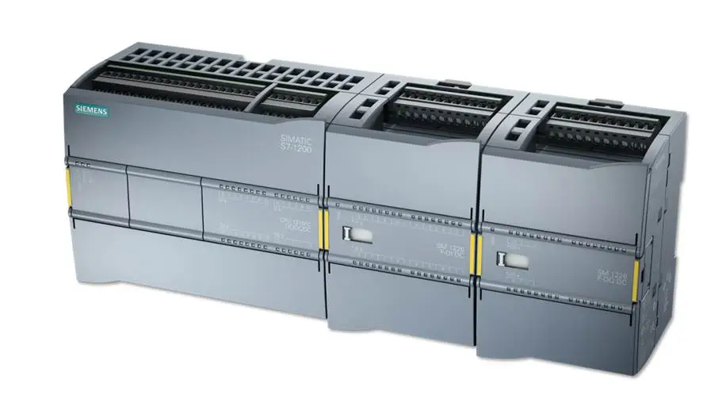</center> </span> --- ### Funcionamiento de un PLC <span style="font-size: 20.0pt; "> <iframe width="560" height="315" src="https://www.youtube.com/embed/PbAGl_mv5XI?si=Y4rXGSzHf6h3ysK2" title="YouTube video player" frameborder="0" allow="accelerometer; autoplay; clipboard-write; encrypted-media; gyroscope; picture-in-picture; web-share" referrerpolicy="strict-origin-when-cross-origin" allowfullscreen></iframe> </span> --- ### Funcionamiento de un PLC <span style="font-size: 20.0pt; "> Consta básicamente de un CPU, espacios de memoria y circuitos de entrada y salida de señales. Internamente, el PLC corre 1 programa a la vez, de forma cı́clica. Este ciclo consta de los siguientes 3 pasos <center>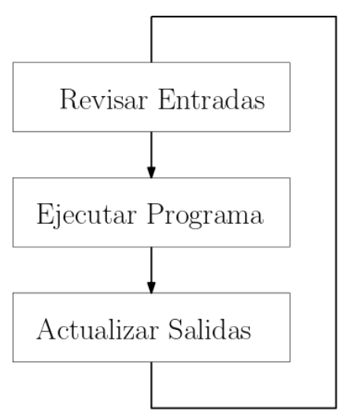</center> </span> --- ### Funcionamiento de un PLC <span style="font-size: 20.0pt; "> * En el primer paso, el PLC toma los valores de cada una de las entradas (sensores) y los almacena en memoria * En el segundo paso, ejecuta el programa (una instrucción a la vez) donde dependiendo de la lógica indicada, y de los valores de las entradas almacenados; decide y calcula qué salidas activar ó apagar almacenando estos resultados en los espacios de memoria destinados para las salidas * En el tercer paso, es donde luego de los calculos, el PLC toma los valores almacenados para las salidas, y activa ó apaga las salidas (actuadores) según corresponda. </span> --- ### Características <span style="font-size: 20.0pt; "> <div id="left"> <font size=6> <p style='text-align: justify;'> * Espacios reducidos * Procesos de producción periódicamente cambiantes * Procesos secuenciales * Maquinaria de procesos variables * Instalaciones de procesos complejos y amplios * Chequeo de programación centralizada de las partes del proceso </p> </font> </div> <div id="right"> <center>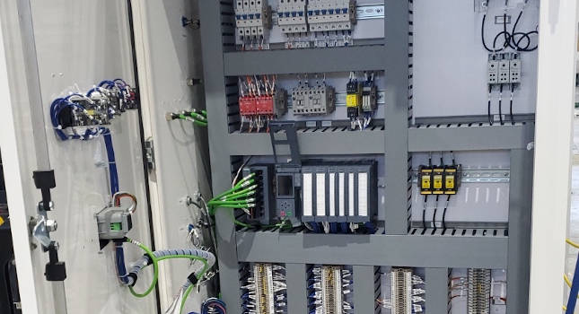</center> </div> </span> --- ### Ventajas <span style="font-size: 22.0pt; "> * Menor tiempo empleado en la elaboración de proyectos * La lista de materiales queda sensiblemente reducida y economı́a del presupuesto * Posibilidad de introducir modificaciones sin cambiar el cableado ni añadir aparatos * Mı́nimo espacio del tablero * Economı́a de mantenimiento * Posibilidad de gobernar varias máquinas con un mismo autómata * Menor tiempo para la puesta en funcionamiento * Si por alguna razón la máquina queda fuera de servicio, el autómata sigue siendo útil </span> --- ### Desventajas <span style="font-size: 22.0pt; "> * Requiere un programador (alguien que sepa) para el PLC * Costo inicial elevado * Tener cuidado con *Casarse con una marca* * Sensores especializados requieren módulos aparte </span> --- ### Estructura básica <span style="font-size: 20.0pt; "> <center>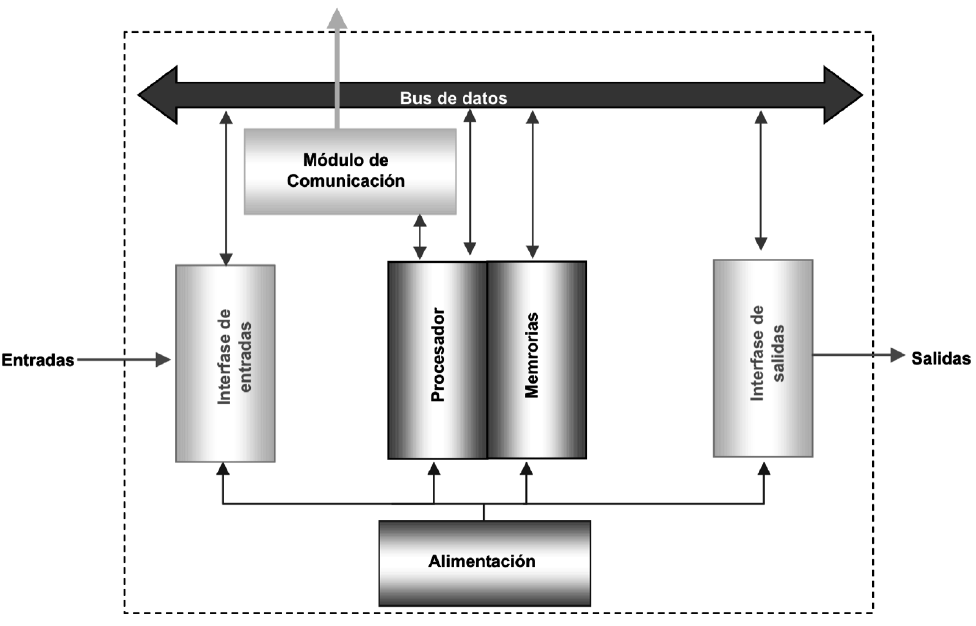</center> </span> --- ### Estructura básica: Procesador <span style="font-size: 18.0pt; "> <div id="left"> <font size=5> <p style='text-align: justify;'> * Cerebro del sistema * Ejecutar el programa realizado por el usuario * Administración de la comunicación * Ejecutar los programas de autodiagnósticos El procesador necesita un programa escrito por el fabricante, llamado sistema operativo, comúnmente no accesible por el usuario, grabado en una memoria ROM. </p> </font> </div> <div id="right"> <img align="right" width="600" height="400" src="https://giftaoktavia.files.wordpress.com/2014/05/plc-system.jpg"> </div> </span> --- ### Estructura básica: Memoria <span style="font-size: 18.0pt; "> Capaz de almacenar y retirar información. Almacenan: **Datos del proceso:** * Señales de entradas y salidas * Variables internas, de bit y de palabra. * Datos alfanuméricos y constantes. **Datos del control:** * Instrucciones de usuario, programa * Configuración del autómata. </span> --- ### Estructura básica: Memoria de datos de proceso <span style="font-size: 18.0pt; "> Capaz de guardar información originada en el microprocesador incluyendo: tiempos, unidades de conteo y relés internos <center>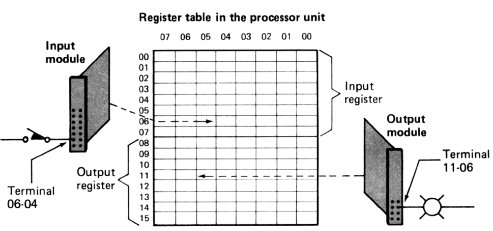</center> </span> --- ### Estructura básica: Memoria de datos de control <span style="font-size: 18.0pt; "> Utilizada para guardar el programa <center>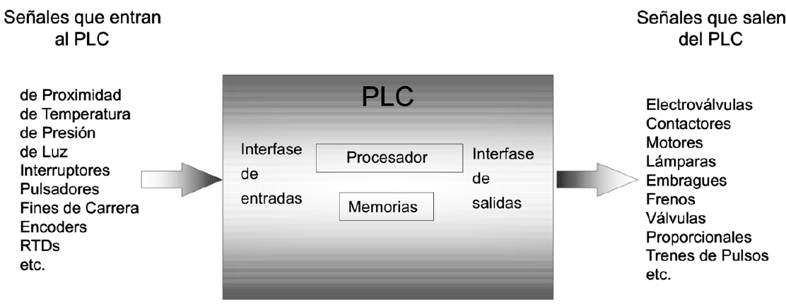</center> </span> --- ### PLC: Señales digitales  --- ### PLC: Señales analógicas  --- ### PLC: tipos <center>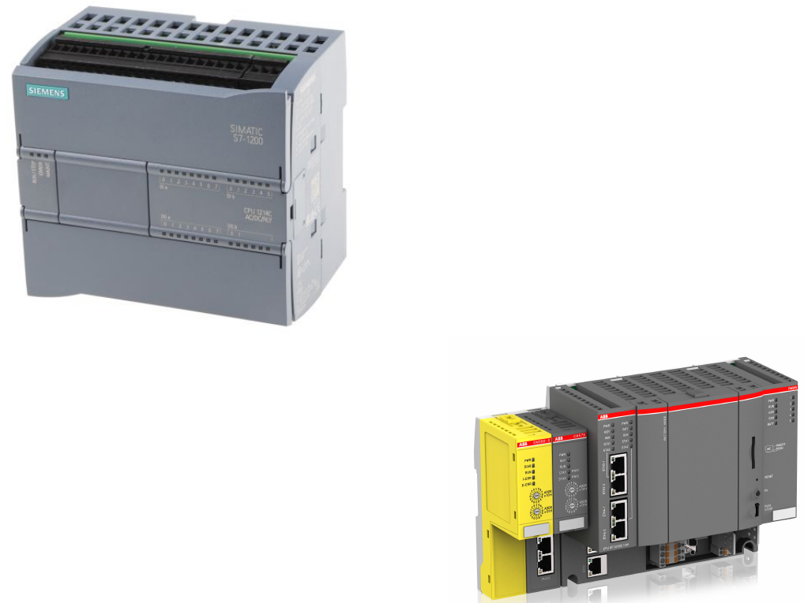</center> --- ### Diagrama escalera (Ladder) <span style="font-size: 18.0pt; "> El Diagrama de Escalera, utilizado en automatización industrial para circuitos lógicos de control. Es uno de los métodos básicos y más utilizados para programar PLCs, ya que es una programación mucho más visual que los lenguajes de texto como C, BASIC, y otros. Además, en los años 70’s cuando se incorporaron los PLC, ya se acostumbraba trabajar con diagramas de conexión de relés, los cuales son parecidos a un diagrama de escalera. </span> --- ### Ladder <center>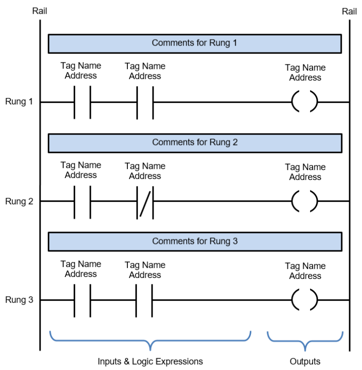</center> --- ### Ladder <center>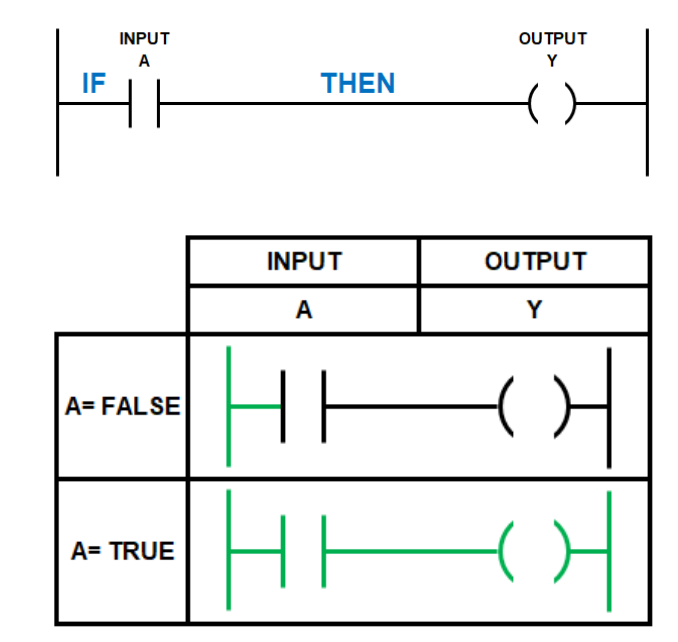</center> --- ### Ladder: NOT <center>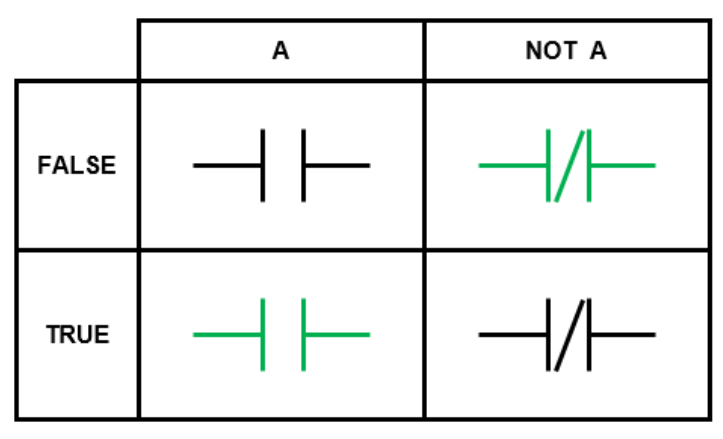</center> --- ### Ladder: AND <center>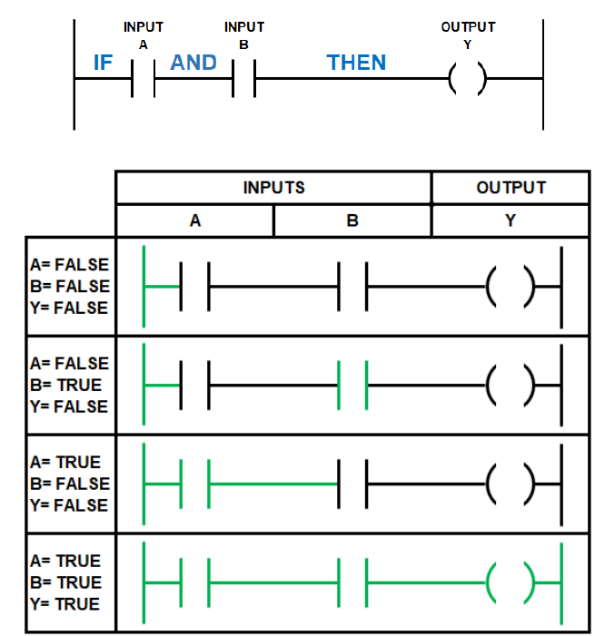</center> --- ### Ladder: OR <center>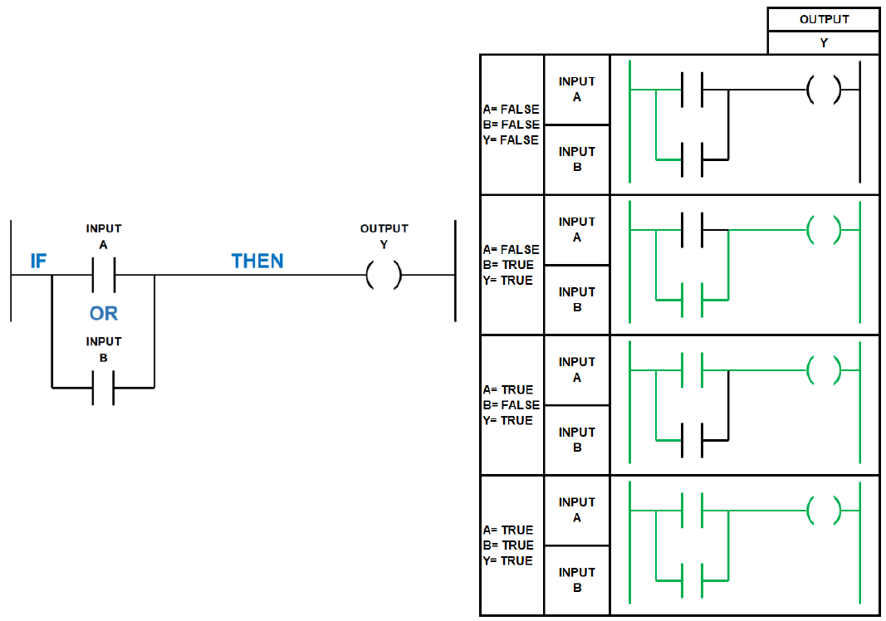</center> --- ### Ladder: ejemplo <center><iframe width="1000" height="600" src="https://www.plcacademy.com/wp-content/uploads/2019/02/start-stop-motor-ladder-logic.gif" title="Falstad" frameborder="0" allow="accelerometer; autoplay; clipboard-write; encrypted-media; gyroscope; picture-in-picture" allowfullscreen></iframe></center> --- ### Ladder: ejemplo 2 <center><iframe width="1000" height="600" src="https://accautomation.ca/wp-content/uploads/2015/08/Paint-Spraying.gif" title="Falstad" frameborder="0" allow="accelerometer; autoplay; clipboard-write; encrypted-media; gyroscope; picture-in-picture" allowfullscreen></iframe></center>